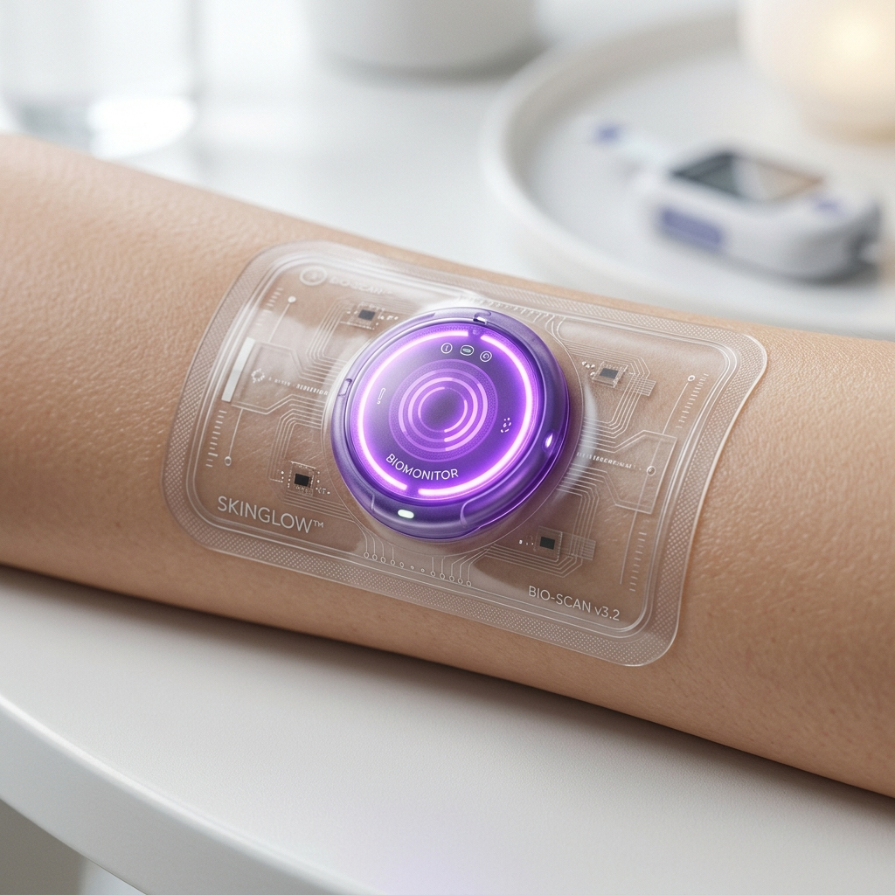

INTELLIGENT
REACTION
Normal Healing
The wound is maintaining optimal pH levels. The hydrogel matrix provides an ideal healing environment.
TARGET
APPLICATIONS
01. Parents & Children
+Eliminate the fear and pain of removing bandages just to check a wound. Visual confirmation provides peace of mind instantly.
02. Athletes
+Continuous monitoring through sweat and rigorous activity. Stay focused on performance, not potential infections.
03. Seniors & Diabetics
+Crucial early detection for slow-healing wounds. Catch complications days before physical symptoms manifest.
WHY IT
MATTERS
Smart low-cost hydrogel technology that redefines post-injury care.
Faster
Infection Detection
Zero
Pain During Checkups
Lower
Hospital Costs
Stops
Bacterial Resistance